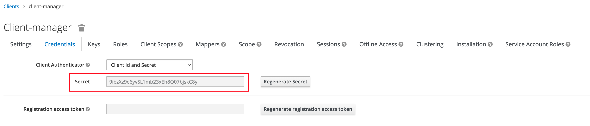
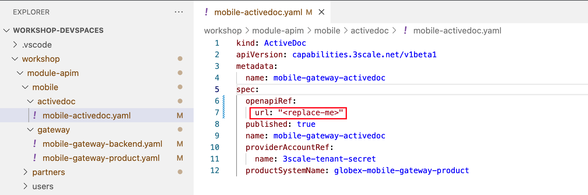
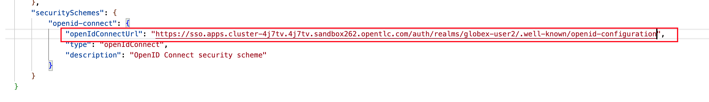
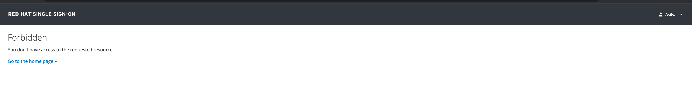
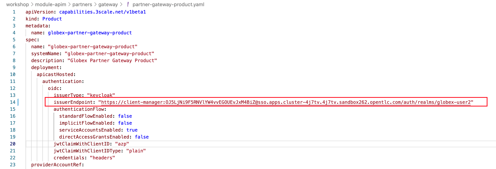
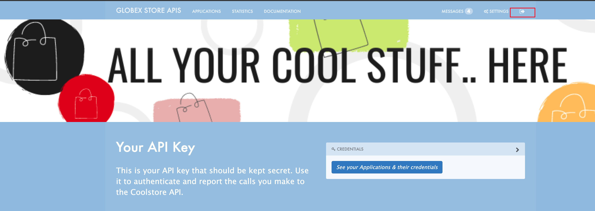
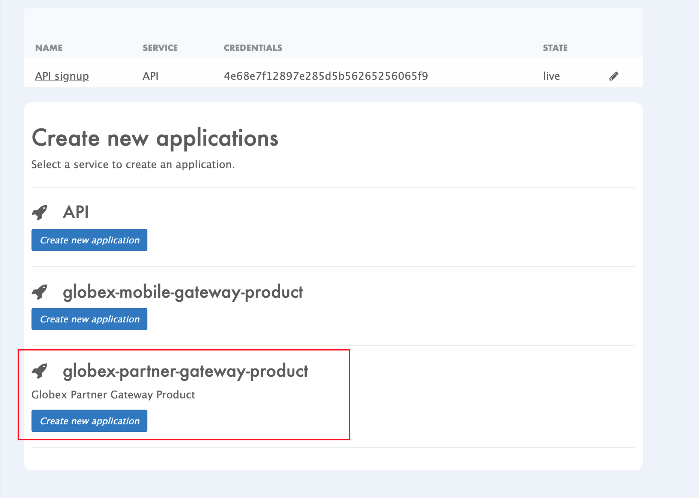
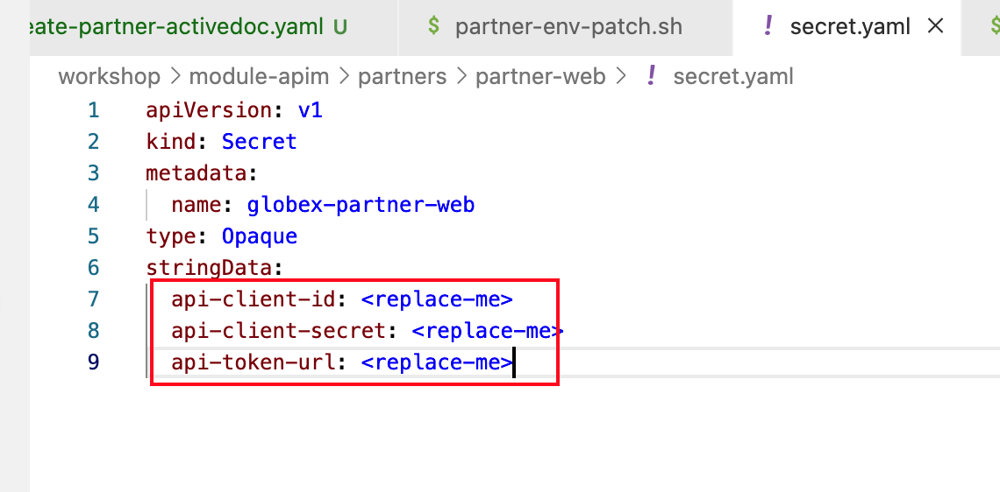
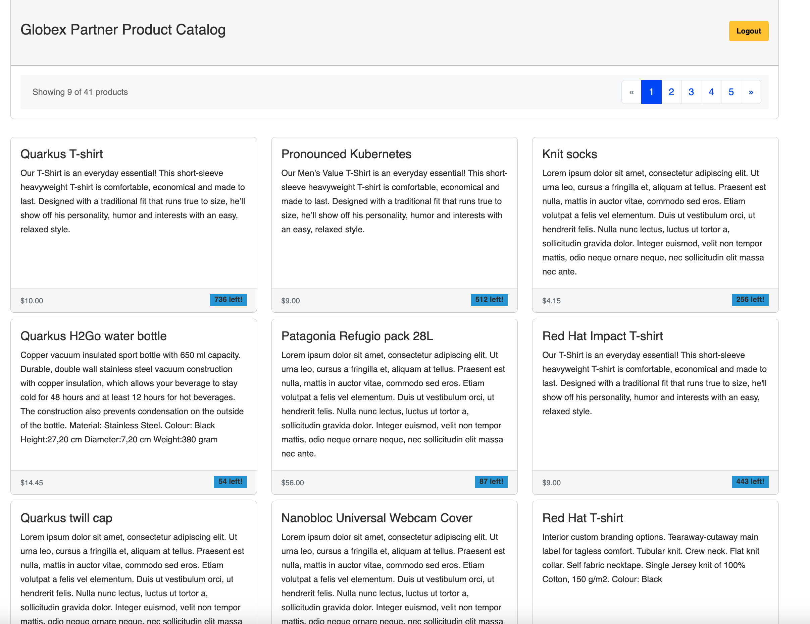

Table of Contents 1. Objectives 2. Setup OpenShift Dev Spaces 2.1. Section Goals 2.2. Instructions 2.3. Scratchpad 3. Red Hat SSO - An Introduction 4. Design and Govern Mobile OpenAPI Specification 4.1. Section Goals 4.2. Design Mobile OpenAPI 4.3. Manage the Mobile OpenAPI with Service Registry 4.4. Section Outcome 4.5. Cleanup 5. Configure 3scale API Management to secure and manage Mobile Gateway API 5.1. Section Goals 5.2. Red Hat SSO 5.3. Create Mobile Gateway Backend, Product and ActiveDoc on 3scale 5.4. Setup Mobile users 5.5. View the newly created Backend, Product, ActiveDoc and Users 5.6. Setup Globex Dev Portal 5.7. Sign up as a Mobile Developer 5.8. Section Outcome 6. Test Mobile Application 6.1. Analytics 6.2. Under the hood 6.3. Cleanup 7. Setup Partner Gateway and Partner Web App (Optional) 7.1. Publish Partner API to Service Registry 7.2. Create Backend, Products, ActiveDoc and Users for Partner Gateway 7.3. Create Active Doc for Partner Gateway 7.4. Setup Partner users 7.5. Configurations on 3scale admin console 7.6. Signup for an application as a Partner 7.7. Setup Partner Web Portal 8. Test Partner Web Application 8.1. Analytics 8.2. Under the hood 9. Congratulations 1. Objectives Here is an outline of the activities you will achieve as part of this module. Figure 1. Activities overview 2. Setup OpenShift Dev Spaces You are going to use OpenShift Dev Spaces for a number of activities. OpenShift Dev Spaces uses Kubernetes and containers to provide a consistent, secure, and zero-configuration development environment, accessible from a browser window. 2.1. Section Goals Access OpenShift Dev Spaces as %user_name% Ensure you are logged in to OpenShift as %user_name% 2.2. Instructions In a browser window, navigate to the browser tab pointing to the Developer perspective of the OpenShift cluster. If you don’t have a browser tab open on the console, click on %openshift_cluster_console%[OpenShift Console^, window="console"] to launch the console. If needed login with your username and password (%user_name%/%user_password%). On the top menu of the console, click on the icon, and in the drop-down box, select Red Hat OpenShift Dev Spaces. Figure 2. Access Red Hat Devspace Login in with your OpenShift credentials (%user_name%/%user_password%). If this is the first time you access Dev Spaces, you have to authorize Dev Spaces to access your account. In the Authorize Access window click on Allow selected permissions. Figure 3. Red Hat Devspace - Allow selected permissions You are directed to the Dev Spaces overview page, which shows the workspaces you have access to. You should see a single workspace, called cloud-architecture-workshop. The workspace needs a couple of seconds to start up. Figure 4. Red Hat Devspace - cloud-architecture-workshop Click on the Open link of the workspace. Figure 5. Red Hat Devspace - Open cloud-architecture-workshop This opens the workspace, which will look pretty familiar if you are used to working with VS Code. Before opening the workspace, a pop-up might appear asking if you trust the contents of the workspace. Click Yes, I trust the authors to continue. Figure 6. Red Hat Devspace - Agree to trust the authors The workspace contains all the resources you are going to use during the workshop. In the project explorer on the left of the workspace, open the workshop/module-apim folder as shown in the screenshot below Figure 7. Red Hat Devspace - API Module You can deploy the various resources needed in this workshop to the OpenShift cluster directly from Dev Spaces. To do so, you will need access to the built-in Terminal. Click on the icon on the top of the left menu, and select Terminal → New Terminal from the drop-down menu. Figure 8. Red Hat Devspace - New terminal This opens a terminal in the bottom half of the workspace. Figure 9. Red Hat Devspace - Open terminal The OpenShift Dev Spaces environment has access to a plethora of command line tools, including oc, the OpenShift command line interface. Through OpenShift Dev Spaces you are automatically logged in into the OpenShift cluster. You can verify this with the command oc whoami. oc whoami Output %user_name% If the output of the oc whoami command does not correspond to your username (%user_name%), you need to logout and login again with the correct username. oc logout oc login -u %user_name% -p %user_password% %openshift_api_internal% You will be working in the globex-apim-%user_name% namespace. So run this following command to start using that particular project oc project globex-apim-%user_name% Figure 10. Red Hat Devspace - Verify that you are using the globex-apim-<username> namespace Keep this browser tab open because you will referring to draft content, scripts and YAML files for creating objects on OpenShift 2.3. Scratchpad As you work through this Contract First APIs module, there are a few variables and URLs that are needed throughout this activity. To make things easier and manageable we’ve setup a scratchpad within Dev Spaces. You can fill this scratchpad up with information needed as you are guided below so that you can progress through this activity faster. 3. Red Hat SSO - An Introduction Red Hat SSO is used in this module to both offer single-sign on to Mobile users, and also for securing the APIs. We will be using OpenID Connect which is an open authentication protocol that works on top of the OAuth 2.0 framework. OIDC offers a discovery mechanism called OpenID Connect Discovery, where an OpenID server (here Red Hat SSO based on Keycloak) publishes its metadata at a well-known URL. This URL is typically a collection of various endpoints the server offers, some of which are used in this workshop too. Launch Red Hat SSO by clicking %sso_tenant_console%[SSO Console^,window="sso"] and login using username and password (%user_name%/%user_password%). Click on the OpenID Endpoint Configuration link to view the OpenID Provider Configuration of Red Hat SSO. Figure 11. Red Hat SSO - Logged In In case you see an error stating You don’t have access to the requested resource, you will need to logout, close the browser tab, and login again Click on Sign Out and close the browser Launch Red Hat SSO by clicking %sso_tenant_console%[SSO Console^,window="sso"] and login using username and password (%user_name%/%user_password%). Login as (%user_name%/%user_password%). Here is how the OpenID Provider Configuration looks like Figure 12. Red Hat SSO - OpenID Provider Configuration We are interested specifically in the following endpoints Endpoint URL OpenID Provider Configuration (well-known config): This URL provides a mechanism to discover the End-User’s OpenID Provider and obtain information needed to interact with it, including OpenID/OAuth endpoint locations. The following endpoints is fetched from this URL https://sso.%openshift_subdomain%/auth/realms/globex-%user_name%/.well-known/openid-configuration issuer: This value is needed when we need to authorize a user through single sign-on https://sso.%openshift_subdomain%/auth/realms/globex-%user_name% token_endpoint : clients can obtain access tokens from the server using this token endpoint and use these same tokens to access protected resources (APIs in our case) https://sso.%openshift_subdomain%/auth/realms/globex-%user_name%/protocol/openid-connect/token 4. Design and Govern Mobile OpenAPI Specification In this step you will import the draft OpenAPI specs for Mobile App and edit them to include Security Schemes. Once the API design phase is complete you will then manage that within the Red Hat Service Registry. The API Designer sessions are stateless and you must save your API definition as a JSON file at the end of each session. 4.1. Section Goals Import a draft OpenAPI specification for Mobile App into an API Designer Edit the draft OpenAPI specification to add OpenID Security Schemes and include Red Hat SSO’s OpenID Provider Configuration Govern the Mobile OpenAPI with Red Hat Service Registry 4.2. Design Mobile OpenAPI To import the OpenAPI draft into API designer, you can import as text OR upload as file. To keep things simple in this workshop, you will import the content by simply pasting the draft spec as YAML based text into the API designer. In a real-world scenario you would do the inverse: start with an empty API specification, and define the different elements of the spec document. You would then export the spec in JSON or YAML format (by copying the contents from the source editor) to your local file system and push it to version control. Launch API Designer by clicking on this link %api_designer_url%[API Designer^, window=api_designer] Click on the New API button. Figure 13. Red Hat API Designer - New API Click on the Source Tab on the New API page, and delete the entire content in the window. Note: Keep this tab open. You will be pasting the draft OpenAPI into this window. Figure 14. API Designer - Open Source Tab Figure 15. API Designer: Clear all content in Source Tab To get the Mobile OpenAPI draft, navigate to the browser tab with Dev Spaces that you have earlier opened. If you don’t have a browser tab open to Dev Spaces, click on %devspaces_dashboard%/dashboard/#/ide/devspaces-%user_name%/cloud-architecture-workshop[Dev Spaces IDE^, window="devspaces"]. If needed login with your username and password (%user_name%/%user_password%). In Dev Spaces, navigate to the folder workshop → module-apim → mobile → activedoc, and open the file mobile-activedoc-draft.yaml Or type [Ctrl+P] and type the file name as mobile-activedoc-draft.yaml Copy the entire contents from this file (Ctrl+A and Ctrl+C) Figure 16. Copy Mobile OpenAPI draft from Dev spaces Now paste the copied content (draft OpenAPI) from the above step into the API designer’s Source Tab replacing all of the existing content. Click on Save button as highlighted in the screenshot below. Figure 17. API Designer: Paste Mobile Draft OpenAPI Navigate back to the Design Tab Figure 18. API Designer: Design Tab You will now need to update the security scheme. Under the SECURITY SCHEMES section, click on Add a security scheme link Figure 19. API Designer: Add a security scheme You are presented with the Define the Security Scheme page. Provide the following values in the form, and click on Save Name (textbox) openid-connect Description (textarea) OpenID Connect security scheme Security Type (dropdown) OpenID Connect OpenID Connect URL (textbox) https://sso.%openshift_subdomain%/auth/realms/globex-%user_name%/.well-known/openid-configuration Figure 20. API Designer: Define the Security Scheme wizard You are navigated back to the homepage. Verify that you can see the SECURITY SCHEMES has been updated with your configuration Figure 21. API Designer: Verify openid-connect Security Scheme added The OpenAPI specification is now ready to be downloaded. Click on the down arrow button adjacent to Save As.. and then choose Save as YAML button found on top-right of the page. The file gets saved automatically in the Downloads folder of your computer. Figure 22. API Designer: Save API as YAML in your computer You can now close this browser tab. The Mobile OpenAPI spec is ready to be governed with a Service Registry. 4.3. Manage the Mobile OpenAPI with Service Registry Launch Service Registry by accessing %service_registry_url%[Service Registry^, window="service_registry_url"] Figure 23. Service Registry: Landing Page Click on the Upload artifact button as shown in the above screenshot. You will be presented with a Upload Artifact wizard Figure 24. Service Registry: Upload Artifact wizard In the wizard, enter the following details, and click on the Upload button. Use the exact same values as instructed below to avoid errors in the other sections of this labs. Group globex ID of the artifact mobileapi Artifact textarea Click on Browse.. button to upload the Mobile OpenAPI downloaded in the previous step, or Drag & drop the file into the textarea. Figure 25. Service Registry: Provide information needed by Upload Artifact wizard and Upload Note that the Globex Mobile API Gateway artifact has been uploaded and stored within Service Registry Figure 26. Service Registry: Globex Mobile API Gateway artifact has been uploaded You can share this OpenAPI schema with others via this OpenAPI Schema’s endpoint : %service_registry_url%/apis/registry/v2/groups/globex/artifacts/mobileapi You can now close the Service Registry’s browser tab. This schema can be used for generating Quarkus code for both Clients and Server-side using maven plugins. (Note that the Globex Mobile App is NodeJS + Angular in this module) 4.4. Section Outcome Added Security Scheme to Mobile OpenAPI with API Desginers Imported the Mobile OpenAPI into Service Registry to govern the API spec. A shareable link is available to the Mobile OpenAPI specification to be used by other teams and systems. 4.5. Cleanup Please close the API Designer and Service Registry browser tabs (^‿^) to avoid too many browser tabs 5. Configure 3scale API Management to secure and manage Mobile Gateway API The Mobile API has now been designed by API Designer, and is governed by Red Hat Service Registry. Let us fast forward a bit in time, and the backend developers team has built the Mobile Gateway server-side code built using Quarkus. This service has been pre-deployed under the module-apim-%user_name% namespace on OpenShift. In this section you will manage and secure the Mobile Gateway API endpoints so that the Mobile App can access them securely. To create these API endpoints, and secure and manage them, we will need to configure them on 3scale API management. 5.1. Section Goals setup Red Hat SSO to provide single sign-on (SSO) capabilities for users signing into Mobile App setup Red Hat SSO to secure Mobile Gateway API endpoints using OpenID Connect manage Mobile Gateway APIs with Red Hat 3scale API Management access Red Hat 3scale API Management’s Developer Portal as a Mobile Developer to sign up for access of API 5.2. Red Hat SSO 3scale integrates with Red Hat SSO for authenticating the API requests using the OpenID Connect specification. On signing-up, External/Mobile developers will be provided with client credentialsto access to the APIs securely. This client credentials is synced between 3scale and the Red Hat Single Sign-On server using a component know an Zync In order to setup OpenID Connect, you will now create a special client id meant for Client Credentials Management Click to launch %sso_tenant_console%[Red Hat SSO^, window="sso"] and login using username and password (%user_name%/%user_password%). Click on Clients from the left-hand navigation. And, then click on the Create button on the right side as shown below Figure 27. Red Hat SSO: Clients listing In the Add Client wizard, enter the following details, and click on the Save button. Name Value Client Id client-manager Client Protocol (dropdown) openid-connect Figure 28. Red Hat SSO: Add Client wizard You will be shown the Settings tab of client-manager client. Figure 29. Red Hat SSO: View client-manager Settings Configure this client-manager as follows (refer to screenshot below) so that 3scale can synchronize with Red Hat SSO Change Access Type to Confidential Once the Access Types is Confidential you will see a new toggle button Service Accounts Enabled Keep Service Accounts Enabled as ON, and turn all other Grants and Flow OFF to match the following screenshot. This configuration allows only Services based access using Service Accounts, and will be used by 3scale API Management system in the next steps, when mobile users sign up for access. Service accounts provide a flexible way to control API access without sharing a regular user’s credentials. Figure 30. Red Hat SSO: Configure client-manager Click on Save button at the bottom of the page. You will be notified that the changes are saved successfully. Figure 31. Red Hat SSO: Save client-manager settings Now you will need to setup Client Roles for this client id, so that it can manage other clients (create, amend and delete) on behalf of 3scale API Management Click on the Service Account Roles tab from the top tab navigation. From the Client Roles dropdown, choose realm-management Figure 32. Red Hat SSO: setup Service Account Roles for client-manager in Service Account Roles tab From the Available Roles multichoice field, choose manage-clients, and click on Add selected >> button The mappings will get auto-saved. Figure 33. Red Hat SSO: Add manage-clients roles You can view the credentials of this client-id from the Credentials tab. You will need this when setting up the 3scale products Now is a good time to save this in your Dev Spaces Scratchpad. (Ctrl+P > scratchpad.txt to open the file from within Dev Spaces tab)  Figure 34. Red Hat SSO: Client Credentials of client-manager 5.3. Create Mobile Gateway Backend, Product and ActiveDoc on 3scale To integrate and manage the Mobile Gateway API in 3scale, you need to create Products and Backend [Click to know] What are Backend, Product, ActiveDocs and CRDs? Backends are Internal APIs which are then bundled into a 3scale Product. it contains at least the URL of the API It can optionally be configured with mapping rules, methods and metrics to facilitate reusability. Products are the Customer-facing APIs. It defines the application plans, and configure APIcast You can create API documentation by attaching the Mobile OpenAPI schema as a 3scale ActiveDoc ActiveDocs are interactive documentation for your API offered as a framework by 3scale. With Swagger 2.0 (based on the Swagger Spec) this provides a functional, attractive documentation for the API, which will help developers to explore, to test and integrate with the APIs. A CRD file allows you to define your own object kinds (Backend, API, ActiveDoc etc) and lets the API Server handle the entire lifecycle of the objects. In this workshop you will be using the 3scale Operator that creates and maintains 3scale on OpenShift with custom resource definitions (CRDs). 5.3.1. Create 3scale Backend for Mobile Gateway service To create the Backend for Mobile Gateway, you will need the Service URL of Mobile Gateway deployment running on OpenShift. [Click to know] What is a Service? In OpenShift, a Kubernetes Service serves as an internal load balancer and identifies pods which in turn have the applications. If the application needs to be accessed from outside of OpenShift, you will need OpenShift routes. In this workshop, since both 3scale and the Mobile Gateway run on OpenShift, 3scale will proxy requests to the backend using Services. This also means the backend cannot be accessed directly from outside OpenShift. Navigate to the Dev Spaces browser tab you have launched at the beginning of this module If this browser tab is not open, click on %devspaces_dashboard%/dashboard/#/ide/devspaces-%user_name%/cloud-architecture-workshop[Dev Spaces IDE^, window="devspaces"] and login with (%user_name%/%user_password%). Navigate to the folder workshop → module-apim → mobile → gateway and open the mobile-gateway-backend.yaml file. (Shortcut: Ctrl+P > mobile-gateway-backend.yaml) In the file mobile-gateway-backend.yaml, update the <replace-me> placeholder with the Service endpoint of the Globex Mobile gateway service appended with the port :8080. http://globex-mobile-gateway.globex-apim-%user_name%.svc.cluster.local:8080 Figure 35. Update mobile-gateway-backend.yaml with Service endpoint of Globex Mobile gateway The privateBaseURL in the mobile-gateway-backend.yaml file should read like this: privateBaseURL: "http://globex-mobile-gateway.globex-apim-%user_name%.svc.cluster.local:8080" [Click to know] How to fetch Service URL from OpenShift console? Navigate to the globex-apim-%user_name% namespace on the OpenShift console by clicking here %openshift_cluster_console%/topology/ns/globex-apim-%user_name%[APIM module on OpenShift^] and login with (%user_name%/%user_password%). In the Find by name filter enter the value mobile-gateway. The globex-mobile-gateway deployment is highlighted. Clicking on this deployment opens the context menu for this deployment Figure 36. Locate globex-mobile-gateway deployment Under Services section you can see the name of the services assocated with this deployment. Click on the globex-mobile-gateway link and you will be taken to the Services page. Under Service routing → Hostname, you can find the service’s hostname. Make a note of this URL and you will need this to create the Backend on 3scale. Figure 37. Mobile Gateway Service in OpenShift From the Terminal of Dev Space,s that should be open already, run the following command oc whoami to check if you are still logged in as %user_name% and oc project to see if you are in the project globex-apim-%user_name% If you are not in globex-apim-%user_name%, run oc project globex-apim-%user_name% to login to the right namespace Check logged-in username and project $ oc whoami %user_name% $ oc project Using project "globex-apim-%user_name%" on server... Run the following command to create a Mobile Gateway Backend in 3scale. oc apply -f /projects/workshop-devspaces/workshop/module-apim/mobile/gateway/mobile-gateway-backend.yaml -n globex-apim-%user_name% You should see the output as Output of Mobile Gateway Backend creation backend.capabilities.3scale.net/globex-mobile-gateway-backend configured 5.3.2. Create 3scale Product for MobileGateway API In Dev Spaces in the folder workshop → module-apim → mobile → gateway, open the file mobile-gateway-product.yaml. [Shortcut: Ctr+P > mobile-gateway-product.yaml] This file creates a 3scale Product, and also attaches the Backend we created in the previous step to the Product. Update the following 2 values as directed below. <client-credentials> : Value of Client Credentials of the client-manager client you created in Red Hat SSO in the previous step. If you don’t have this value, click on Red Hat %sso_tenant_console%/#/realms/globex-%user_name%/clients[SSO Clients List^, window="sso"]. Login if needed with (%user_name%/%user_password%). Click on the Client ID client-manager. You can copy the credentials from the Credentials tab <issuer-endpoint> : Value as below sso.%openshift_subdomain%/auth/realms/globex-%user_name% This URL is from Red Hat SSO’s Issuer endpoint from well-known configurations endpoint. Figure 38. Red Hat SSO Issuer URL The mobile-gateway-product.yaml file should looks like this now Figure 39. mobile-gateway-product.yaml updated with the correct values Execute the following command in the Terminal to create this Product for Mobile Gateway oc apply -f /projects/workshop-devspaces/workshop/module-apim/mobile/gateway/mobile-gateway-product.yaml -n globex-apim-%user_name% You will the see the following output confirming creation of 3scale Product for Mobile Gateway: Output product.capabilities.3scale.net/globex-partner-gateway-product created 5.3.3. Create Active Doc for Mobile Gateway In Dev Spaces, navigate to the folder workshop → module-apim → mobile → activedoc, open the file create-mobile-activedoc.yaml  Replace the <replace-me> placeholder with the Service Registry OpenAPI endpoint. This is the same OpenAPI spec that you setup on Service Registry. %service_registry_url%/apis/registry/v2/groups/globex/artifacts/mobileapi Figure 40. ActiveDoc updated with OpenAPI Service Registry endpoint Create this Active Doc by running the following command in the Dev Spaces Terminal oc apply -f /projects/workshop-devspaces/workshop/module-apim/mobile/activedoc/create-mobile-activedoc.yaml -n globex-apim-%user_name% Output activedoc.capabilities.3scale.net/mobile-gateway-activedoc created 5.4. Setup Mobile users The Mobile developers of Globex will need access to the Developer Portal to signup for the APIs exposed to them. Typically they would access the developer portal and signup for an account which may as needed go through an approval process For the purpose of this workshop let us run a few commands to setup these users as defined in the file mobile-dev-setup.yaml. In the Dev Spaces Terminal run the following command oc apply -f /projects/workshop-devspaces/workshop/module-apim/mobile/users/mobile-dev-setup.yaml -n globex-apim-%user_name% You will see the output as Output of user creation secret/mobileuser.secret created developeraccount.capabilities.3scale.net/mobile-developeraccount created developeruser.capabilities.3scale.net/admin.mobile created developeruser.capabilities.3scale.net/dev.mobile created 5.5. View the newly created Backend, Product, ActiveDoc and Users 5.5.1. View on 3scale admin console Navigate to the %3scale_tenant%[3scale admin portal^, window="3scale"] and login using your username and password (%user_name%/%user_password%). Figure 41. Launch 3scale You will notice that the Mobile Product and Backend have been created. Click on globex-mobile-gateway-product under APIs → Products section. You are presented with the Product overview page for the Mobile API Product you created. Note the following elements Published Application Plans Application Plans define the different sets of access rights you might want to allow for consumers of your API. These can determine anything from rate limits, which methods or resources are accessible and which features are enabled Backend that has been attached to the Mobile Gateway Product Figure 42. Mobile Gateway Product: Overview Navigate to Integration → Settings page from the Product overview page. You will notice that the Product has been setup with OpenID Connect as Authentication mechanism client_manager client details that you had created in the previous steps. OIDC Authorization Flow includes Implicit Flow because we would be authenticating the users SSO as well access to the backend services Figure 43. Mobile Gateway Product: Settings The ActiveDoc is visible from the 3scale portal as well under Products. Click on the ActiveDoc to preview the OpenAPI specifications. Figure 44. Mobile Gateway Product: ActiveDoc Navigate to Integration → Configuration and click on the Promote to v.x Staging APICast and then Promote to v.x Production APICast to promote all the config changes APIcast is an NGINX based API gateway used to integrate internal and external API services with the 3scale. APIcast can be hosted or self-managed. In this workshop we use the default self-managed option. Figure 45. Promote Staging and Production APICast 5.5.2. Viewing on OpenShift console You can also view these objects on OpenShift console as follows [Click to View] View on 3scale Operator page in OpenShift console You can now see that the Backend, Product, ActiveDoc and Users from the 3scale OpenShift operators on %openshift_cluster_console%/k8s/ns/globex-apim-user1/clusterserviceversions[Installed Operators^, window="console"] Navigate to Red Hat Integration - 3scale → All Instances and click on Current namespace only. You will see that the Product and Backend have been created. Figure 46. View Product, Backend, ActiveDoc and Users 5.6. Setup Globex Dev Portal A good developer portal is a must have to assure adoption of your API. In this section we will setup the Dev Portal so that it is ready to be used by Mobile Developers. Navigate to 3scale’s Audience →Developer Portal → Settings by clicking on %3scale_tenant%/site/dns[Settings → Domains & Access section^, window="3scale"] The Developer Portal Access Code hides the site from the world till you are ready. Remove the value in the textfield below the label Developer Portal Access Code as shown below. Click on the Update Account button. This opens up the Developer Portal to public access without the need for an Access Code. Figure 47. Remove Developer Portal Access Code The next step is to allow a Developer to access Multiple APIs (Services) and signup for Multiple Applications Navigate to %3scale_tenant%/p/admin/cms/switches[Developer Portal → Feature Visibility section, window="3scale"] Click on the Show button against the features Multiple Services and Multiple Applications. The changes are auto-saved. Figure 48. Feature Visibility section After updating the settings, this page should be seen as per the screenshot below. Figure 49. Feature Visibility settings altered The Globex Developer Portal is fully setup now for Mobile developers to signup. 5.7. Sign up as a Mobile Developer In this section you will login as a Mobile Developer (as the user you created in the previous section), and signup for API access Launch the Globex Developer Portal by clicking on %globex_developer_portal%[Developer Portal^, window="devportal"] Figure 50. Developer Portal Click on the SIGN IN link found on top-right. Sign in as one of the user you created in the previous section with username: dev.mobile password: openshift Figure 51. Developer Portal Navigate to Applications Listing by choosing the APPLICATIONS menu on the top of the page. Figure 52. Developer Portal Landing Page In the Applications page you are invited to Create Application. Click on the Create new application button seen against globex-mobile-gateway-product Figure 53. Developer Portal: Create new application Click on Subscribe to globex-mobile-gateway-product link Figure 54. Subscribe to globex-mobile-gateway-product You are successfully subscribed to the service Figure 55. Successfully subscribed to the service Navigate back to the APPLICATIONS tab found on the top menu and click globex-mobile-gateway-product’s > Create new application link Figure 56. Developer Portal: Create new application (again) Give the plan a Name and a Description and click on Create Application Figure 57. Developer Portal: New application An application is created successfully. Make a note of the Client ID and Client Secret. You will be using this in the Mobile App setup. Scratchpad can be used for this as well. Enter the value asterisk (*) in the REDIRECT URL field and click on the Submit button. This is to setup the right Redirect URL for OAuth using Red Hat SSO. In real-life you would never mark this as (*), but provide the correct URL based on your application. Figure 58. Update REDIRECT URL in the Application creates successfully for Mobile User Copy the Client ID from this page which will be used to setup Mobile App In Dev Spaces open the file: Dev Spaces → workshop → module-apim → mobile → mobile-env-patch.sh Substitute <replace-me> found against the API_CLIENT_ID variable with the Client ID in the previous step Figure 59. Update client_id into mobile-env-patch file Back in the Developer Portal Click on DOCUMENTATION navigation on the top of the page. The Documentation page displays all the available APIs including the default API as well as globex-mobile-gateway-product Figure 60. Dev Portal: Documentation Page Copy the URL displayed under "Service Endpoint" in globex-mobile-gateway-product box In Dev Spaces navigate back to the open file: Dev Spaces → workshop → module-apim → module → mobile-env-patch.sh Substitute <replace-me> found against the GLOBEX_MOBILE_GATEWAY variable with the Service Endpoint in the previous step Figure 61. Update GLOBEX_MOBILE_GATEWAY into mobile-env-patch file In the same file update the <replace-me> tags for the SSO_AUTHORITY and SSO_REDIRECT_LOGOUT_URI fields with the following variables Field Value SSO_AUTHORITY https://sso.%openshift_subdomain%/auth/realms/globex-%user_name% SSO_REDIRECT_LOGOUT_URI https://globex-mobile-globex-apim-%user_name%.%openshift_subdomain%/home Figure 62. Update SSO details into mobile-env-patch file Finally the mobile-env-patch.sh file should look like this. Save the file by `Ctrl+S Figure 63. Fully updated mobile-env-patch file Execute this script in the Terminal by running the following command in Dev spaces' Terminal oc project globex-apim-%user_name% sh /projects/workshop-devspaces/workshop/module-apim/mobile/mobile-env-patch.sh Output of running mobile-env-patch.sh script deployment.apps/globex-mobile updated The Mobile App Deployment is patched with the necessary variables. You can view this navigating to %openshift_cluster_console%/k8s/ns/globex-apim-%user_name%/deployments/globex-mobile/environment[globex-mobile deployment, window="console"] Figure 64. globex-mobile deployment on OpenShift 5.7.1. Update Red Hat SSO’s Web Origin to match Mobile App There is one last step that you need to do before trying out the Mobile App. You need to update the Web Origin Navigate to click on %sso_tenant_console%/#/realms/globex-%user_name%/clients[Red Hat SSO Clients List^,window="sso"]. Login if needed with (%user_name%/%user_password%). Figure 65. Red Hat SSO Clients List for Mobile client Click on the new Client ID that was created when you signed up for Mobile Gateway Application Where do I find this Client ID? Navigate to the %globex_developer_portal%/admin/applications[Globex Developer Portal Applications^, window="devportal"] The client ID is displayed against the globex-mobile-gateway-product product. Figure 66. globex-mobile deployment on OpenShift Close to the bottom of this page, you would see the Web Origins field. Update this field with the following value and click on Save https://globex-mobile-globex-apim-%user_name%.%openshift_subdomain% Figure 67. Update Web Origin in Red Hat SSO’s new Client ID, and click on Save. 5.8. Section Outcome 3scale Backend, Product, ActiveDocs and Users were created Developer Portal was setup for public access without Access Code Signed for an Application as a Mobile Developer Patched Red Hat SSO Web Origin so that the calls from Globex Mobile App will not cause errors 6. Test Mobile Application In the previous section, you signed up for access as a Mobile Developer and gained credentials to access the Globex Mobile Gateway API. In this section you will complete Mobile App configuration and test this out As part of this workshop, you will use a mobile-friendly Angular App and not a mobile-native app. So no mobile app installation is necessary. This Mobile App is work in progress and at present shows only categories and products within each category. The Mobile Application can be access via this QR Code as well as via browser Scan the following QR Code with your mobile phone Figure 68. Scan to view Mobile App Alternatively, launch Globex Mobile and login using (asilva/openshift) The login process may take a few seconds. Please wait for bit :) Figure 69. User is logged in After logging in, click on the View the categories button. You will view on a list of Categories available Figure 70. Categories view Click on the 'Clothing' category to view the Product Listing. Try out a few more categories too which will help us to generate some traffic to view in the Analytics section. 6.1. Analytics Navigate to the %globex_developer_portal%/buyer/stats[Globex Developer Portal Statistics^, window="devportal"] From the dropdown indicated in this screenshot, choose the Mobile Gateway API’s application plan (which is basic-plan in this case). You will be presented with the statistics graph of the calls made to this gateway by the Partner Developer’s access. 6.2. Under the hood As part of this Section you tried out the Mobile App. The user asilva you logged into the Mobile App as, is authenticated using Red Hat SSO. Once the user logs in, a token is generated by Red Hat SSO using the Client ID, SSO Authority details that you passed to the Mobile App to setup the configuration This token is authenticated by 3scale to ensure the Client ID indeed has access to that particular API The token is also passed onto the backend service running on OpenShift, which checks for validity of the token. The REST endpoints is supplied with the SSO URL information as part of the application.properties The endpoints are protected with @Authenticated which in this case looks for a valid token being present. Figure 71. REST endpoint is annotated with @Authenticated With that we wrap up the activities Design, Govern, Manage, Secure Globex Mobile Gateway APIs for access from the Mobile Application securely. Coming up next: We will setup the Globex Partner APIs for access by external Partner portals. If you are running out time, now is a good time to switch to a different module. The Partner Portal section is quite similar to the Mobile App but for the fact that the Partner Users are not managed by Red Hat SSO. Therefore Partner Portal authenticates itself using the Client Credentials method using a client ID and secret. The authentication is only through the backend services of the Partner Portal without users getting into the picture. 6.3. Cleanup You can now close all the tabs except for this Instructions and Dev Spaces browser tabs. Close all files open within Dev Spaces as well. If you choose to proceed to another module, close all but this Instructions browser before starting the next module. Go back to the Overview Page to choose your next module. 7. Setup Partner Gateway and Partner Web App (Optional) Before we start this section, close all the browser tabs except for this Instructions tab and Dev Spaces tab. This will help you navigate this section more easily. Since we’ve gone through the Design and Governance sections of the Mobile API, in this section we will skip the design section. We’ll also keep discussions to only essentials :) 7.1. Publish Partner API to Service Registry If you don’t have a browser tab open with OpenShift Dev Spaces, click on %devspaces_dashboard%/dashboard/#/ide/devspaces-%user_name%/cloud-architecture-workshop[Dev Spaces IDE^, window="devspaces"]. If needed login with your username and password (%user_name%/%user_password%). In Dev Spaces, navigate to the folder workshop → module-apim → partner → activedoc, and open the file partner-activedoc-draft.json. Or type [Ctrl+P] and type the file name as partner-activedoc-draft.json Scroll to the bottom of the page where you can see the securitySchemes section Figure 72. Partner OpenAPI Security Schemes section Substitute <replace-me> with the Red Hat SSO’s OpenID Provider Configuration shown below https://sso.%openshift_subdomain%/auth/realms/globex-%user_name%/.well-known/openid-configuration  Figure 73. Updated Security Scheme Execute the following command from the Dev Spaces' Terminal. This command makes a POST to the Service Registry API to create an OpenAPI schema for Partner Gateway API. curl -X POST -H "Content-type: application/json; artifactType=OPENAPI" -H "X-Registry-ArtifactId: partnerapi" -d @/projects/workshop-devspaces/workshop/module-apim/partners/activedoc/partner-activedoc-draft.json %service_registry_url%/apis/registry/v2/groups/globex/artifacts The following JSON is returned back by Service Registry confirming creation Output response from Service Registry {"name":"Globex Partners API Gateway","description":"Globex APIs made accessible to global partners to view Globex's catalog and products","createdBy":"","createdOn":"2023-05-05T22:51:01+0000","modifiedBy":"","modifiedOn":"2023-05-05T22:51:01+0000","id":"partnerapi","version":"1","type":"OPENAPI","globalId":2,"state":"ENABLED","groupId":"globex","contentId":2,"references":[]}workshop-devspaces (main) You can view the newly created OpenAPI specification %service_registry_url%/ui/artifacts/globex/partnerapi/versions/latest[here^, window="serviceregistry"] You can close the Service Registry browser tab. 7.2. Create Backend, Products, ActiveDoc and Users for Partner Gateway 7.2.1. Create Backend In Dev Spaces , under the folder workshop → module-apim → partners → gateway, open the file partner-gateway-backend.yaml Substitute "<replace-me>" with the Service endpoint of the Globex Partner gateway service appended with the port as :8080. This URL is given below http://globex-partner-gateway.globex-apim-%user_name%.svc.cluster.local:8080 After substitution the partner-gateway-backend.yaml file should looks like Figure 74. partner-gateway-backend file Run the following command which will create a Partner Gateway Backend in 3scale. oc apply -f /projects/workshop-devspaces/workshop/module-apim/partners/gateway/partner-gateway-backend.yaml -n globex-apim-%user_name% backend.capabilities.3scale.net/globex-partner-gateway-backend created 7.2.2. Create Products In Dev Spaces , under the folder workshop → module-apim → partners → gateway, open the file partner-gateway-product.yaml Figure 75. partner-gateway-product.yaml file Get the value for <client-credentials> placeholder as described below. Or if you have copied this into Scratchpad you can use that instead. Open the %sso_tenant_console%/#/realms/globex-%user_name%/clients[SSO Clients List^, window="sso"] from Red Hat SSO. Login if needed with (%user_name%/%user_password%). In case you see an error stating You don’t have access to the requested resource, you may notice that you are logged in as a user other than %user_name% Click on Sign Out and close the browser Reopen the %sso_tenant_console%/#/realms/globex-%user_name%/clients[Red Hat SSO Clients List^, window="sso"]. Login as (%user_name%/%user_password%).  Figure 76. Red Hat SSO Login error Click on the Client ID client-manager. You can copy the credentials from the Credentials tab Figure 77. client_manager credentials In the partner-gateway-product.yaml file, in Dev Spaces, substitute the following values Substitute <client-credentials> with the Secret from the Client ID client-manager from the previous step Substitute <issuerEndpoint> with the following value sso.%openshift_subdomain%/auth/realms/globex-%user_name% The file partner-gateway-product.yaml looks like this now.  Run the following command in the Dev Spaces Terminal to create the product oc apply -f /projects/workshop-devspaces/workshop/module-apim/partners/gateway/partner-gateway-product.yaml -n globex-apim-%user_name% Output product.capabilities.3scale.net/globex-partner-gateway-product created 7.3. Create Active Doc for Partner Gateway In Dev Spaces, navigate to the folder workshop → module-apim → partners → activedoc, open the file create-partner-activedoc.yaml Replace the <replace-me> placeholder with the Service Registry OpenAPI endpoint for Partner API show below %service_registry_url%/apis/registry/v2/groups/globex/artifacts/partnerapi Create this Active Doc by running the following command in the Dev Spaces Terminal oc apply -f /projects/workshop-devspaces/workshop/module-apim/partners/activedoc/create-partner-activedoc.yaml -n globex-apim-%user_name% Output activedoc.capabilities.3scale.net/partner-gateway-activedoc created 7.4. Setup Partner users Create this Active Doc by running the following command in the Dev Spaces Terminal oc apply -f /projects/workshop-devspaces/workshop/module-apim/partners/users/partner-dev-setup.yaml -n globex-apim-%user_name% Output secret/partner.secret created developeraccount.capabilities.3scale.net/partner-developeraccount created developeruser.capabilities.3scale.net/admin.partner created developeruser.capabilities.3scale.net/user.partner created 7.5. Configurations on 3scale admin console Navigate to the %3scale_tenant%[3scale admin portal^, window="3scale"] and login using your username and password (%user_name%/%user_password%). Figure 78. Launch 3scale You will notice that the Partner Product and Backend have been created. Click on globex-partner-gateway-product under APIs → Products section. You are presented with the Product overview page for the Partner API Product you created. Navigate to Integration → Configuration and click on the Promote to v.x Staging APICast and then Promote to v.x Production APICast to promote all the config changes Figure 79. Promote Staging and Production APICast 7.6. Signup for an application as a Partner Navigate to the Developer Portal %globex_developer_portal%[Globex Developer Portal^, window="devportal"] If you are already signed in, clicking on the Exit option on top-right of the page.  Figure 80. Logout if already signed in Click on SIGN IN on top right of the page and login using username and password as (user.partner/openshift) Navigate to Applications Listing by choosing the APPLICATIONS menu on the top of the page. Figure 81. Developer Portal Landing Page In the Applications page you are invited to Create Application. Click on the Create new application button seen against globex-partner-gateway-product  Figure 82. Developer Portal: Create new application Click on Subscribe to globex-partner-gateway-product link Figure 83. Subscribe to globex-mobile-gateway-product You are successfully subscribed to the service Figure 84. Successfully subscribed to the service Navigate back to the APPLICATIONS tab via the top menu. Under globex-partner-gateway-product’s, click on the Create new application button Figure 85. Developer Portal: Create new application (again) In the NEW APPLICATION page, give the plan a Name and a Description and click on Create Application. Figure 86. Developer Portal: New application An application is created successfully. Make a note of the Client ID and Client Secret. You will be using this in the Partner Web Portal setup. Enter the value asterisk (*) in the REDIRECT URL field and click on the Submit button. This is to setup the right Redirect URL for OAuth using Red Hat SSO Figure 87. Update REDIRECT URL in the Application creates successfully for Partner User 7.7. Setup Partner Web Portal In the previous section, you signed up for access as a Partner Developer and gained credentials to access the APIs Globex exposes. To update the Partner Web application you need these values Client ID & Client Secret - Needs to be fetched from Red Hat SSO Token URL - From Red Hat SSO - But available here in the instructions Globex API Endpoint - From Red Hat 3scale - But available here in the instructions These values are part of %openshift_cluster_console%/k8s/ns/globex-apim-%user_name%/deployments/globex-partner-web/environment[globex-partner-web deployment, window="console"] and are highlighted in the screenshot below Figure 88. globex-partner-web Deployment The Client ID and Client Secret with values as placeholders are predeployed as a Kubernetes Secret called secret.yaml. In the Dev workspace, under the folder /projects/workshop-devspaces/workshop/module-apim/partners/partner-web open the file secret.yaml  Figure 89. secret.yaml Update the Client ID and Client Secret from the previous step on 3scale Developer Portal Figure 90. Client ID and Client Secret from 3scale Developer Portal Update Token URL with the following value https://sso.%openshift_subdomain%/auth/realms/globex-%user_name%/protocol/openid-connect/token In the Dev Spaces Terminal apply changes made to the secret.yaml by running the following command oc apply -f /projects/workshop-devspaces/workshop/module-apim/partners/partner-web/secret.yaml -n globex-apim-%user_name% Output secret/globex-partner-web configured The final step is to patch the Partner Web portal with the Partner Gateway API’s endpoint. You would ideally get this from 3scale. But since you have learnt how to do this with Mobile API, we will skip navigating to 3scale to save some time. Execute this script in the Dev Spaces Terminal oc set env deployments/globex-partner-web --overwrite GLOBEX_PARTNER_GATEWAY=https://globex-partner-gateway-product-3scale-%user_name%-apicast-production.%openshift_subdomain% Output deployment.apps/globex-partner-web updated [Click to know] How do I verify what I just did? Ensure the %openshift_cluster_console%/k8s/ns/globex-apim-%user_name%/deployments/globex-partner-web/environment[globex-partner-web deployment, window="console"] looks like this now Figure 91. Partner Web Portal Deployment Values To check the Secret that you updated, you can navigate to %openshift_cluster_console%/k8s/ns/globex-apim-%user_name%/secrets/globex-partner-web[globex-partner-web secret^, window="console"]. Scroll down to the Data section, and click on Reveal values Figure 92. Partner Web Portal Secret with SSO details 8. Test Partner Web Application In the previous section, you signed up for access as a Partner Developer and gained credentials to access the Globex PArtner Gateway API. You also setup the necessary configurations for the Partner Web Application. Launch the Globex Partner Web Figure 93. Partner Web Portal Login using username/password as (partner/openshift). It is notable that the partner users are not managed using Red Hat SSO. After logging in, the entire product list is shown in a paginated format. Allow a few seconds for the catalogue to load Reload this page by hitting the Browser Refresh a few times which will help us to generate some analytics.  Figure 94. User logged in and can view paginated products 8.1. Analytics Navigate to the %globex_developer_portal%/buyer/stats[Globex Developer Portal Statistics^, window="devportal"] From the dropdown indicated in this screenshot, choose the Partner Gateway API’s application plan (which is partner-basic in this case). You will be presented with the statistics graph of the calls made to this gateway by the Partner Developer’s access. 8.2. Under the hood As part of this Section you setup and tested the Partner Web App. The user partner that you logged into the Partner App as, is not authenticated using Red Hat SSO. In fact it is not authenticated at all. This is because the way partners handle user authentication is not something that Globex is concerned about at all. In this scenario we use Client Credentials authentication, because the backend NodeJS server authenticates itself with Client ID and Credentials obtained by the Partner Developer while signing up for an Application via 3scale Developer Portal The token generated by NodeJS is then exchanged with 3scale to ensure the Client ID indeed has access to that particular API 9. Congratulations With this you have completed the Contract First API module! Please close all but this Instructions browser tab to avoid proliferation of tabs which can make working on other modules difficult. Proceed to the Overview Page to choose your next module.